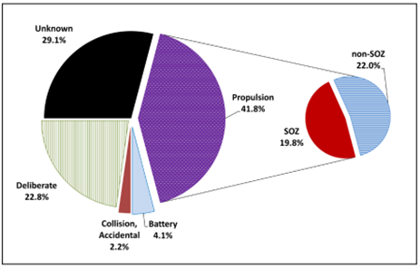
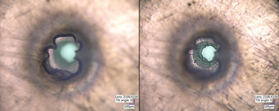

Humanity utilises space for a variety of purposes, including communication, scientific study,
and defence. As on earth, industrial utilisation of this environment creates waste. In orbit,
this waste, or space debris, threatens to damage crucial infrastructure if collisions occur. This
problem has been documented as early on as 1978, but legal and technological solutions have
only ramped up in the last decade, likely due to an increased interest in commercial space
activity. This article will analyse the current and future risks of leaving space debris unchecked,
as well as detail potential mitigative proposals. A variety of academic and industrial research
was accessed, from theoretical models of space debris in the 1970s to more recent studies.
Introduction
Industrial waste is a constant and evolving challenge opposing industrialisation and
development. Mitigative measures can be employed to reduce the negative effects of waste on
earth, but the situation becomes much more complex when we consider human development
in space. The ‘industrial waste’ that we must deal with in space is Orbital Debris, which can
cause huge amounts of damage if they impact our satellites and space stations. Debris can be
defined here as any artificial object discarded in orbit. This paper will determine the extent to
which orbital debris is a threat to human development in space and analyse the proposed
measures to address this threat.
Debris Proliferation
The two primary sources of debris are staged rocket engines (Aglietti et al, 2019),
and decommissioned satellites (Klinkrad, 2006). This debris has the potential to collide and
multiply, creating a positive feedback loop. In 1978, Donald J Kessler posited that this effect
could eventually spiral exponentially, rendering some orbits unusable (Kessler, Cour-Palais, 1978).
In the direst of outcomes, humanity could effectively be trapped on earth. This came to be called
the Kessler Syndrome.

Fig. 1: Sources of orbital debris, where SOZ are launch assurance systems.
Credit: NASA Quarterly News Volume 26, Issue 4
Legal accountability
There is currently insufficient legal framework to hold those who generate debris accountable.
The most recent legislative framework concerning this is the 1972 Liability Convention, which
states that any compensation for debris damage is to be done between governmental bodies
(Poonuganti, Sraavya, 2023) . This is quickly becoming outdated with the rise of international
space-faring corporations, and does not address the generation of debris in both the private and
public sector. For the 2023 Chicago Journal of International Law, Poonuganti and Sraavya suggest
a variety of measures, including expanding the definition of ‘space debris’, classifying abandoned
objects as stateless, such that any party can remove them, and implementing a ‘polluter pays’
principle to space debris.
Debris Dangers

Fig. 2: Debris 'puncture wound' through 5 layers of insulation. Credit: NASA ODPO
Orbital debris collisions are a risk to objects in orbit around the earth. This phenomenon has been
explored in media, most notably in 2013’s ‘Gravity’, but the threat it poses is far from fiction.
The International Space Station has manoeuvred 32 times since 1999 to avoid collisions (Nasa, 2022),
and minor collision damage is well documented. Figure 2 demonstrates how even small debris can
puncture through multiple protective layers.
As the problem of orbit debris continues to worsen through increased launches, orbit collisions, and
the intentional destruction of satellites, the constraints on satellite design will increase, life
expectancy will decrease, and maintenance requirements increase drastically. This will put a
dampening effect on new launches and orbital developments. Further economic analysis suggests that
the falling profitability of new satellites due to the Kessler Syndrome will render certain orbits
economically unusable long before they become physically unusable due to debris (Adilov et al, 2018).
With the rise of commercial space missions, and plans for private space stations (NASA, 2025), a
market is emerging for orbit cleanup methods and operations, and some testing is already underway in
this field. The RemoveDEBRIS mission was the first to demonstrate a variety of orbital debris removal
technologies ( Aglietti et al, 2019). Astroscale are a private sector firm who focus on capture and
deorbit of satellites through a docking system and are currently contracted by UK Space Agency
(Astroscale 2025).
Cleanup Methods
There are various methods of Active Debris Removal (ADR). While there is much ongoing research and development
into ADR systems, only 3 methods of removal have been testing in real orbit environments. These are the
drag-sail, the net, and the harpoon. These were tested on the RemoveDEBRIS mission in 2018 at the ISS
(Aglietti et al, 2019).
Drag-sailing is a method used to decrease the time in which a satellite takes to deorbit. The sail is
preinstalled and unfurls when it is to be deorbited. This method is mechanically simple and compact, which
increases reliability and cost effectiveness. The major constraint is that it only decreases deorbit time, and
does thus will not work on satellites that will eventually deorbit naturally.
A deployed net is a method proposed to capture larger debris that have no deorbiting technology preinstalled.
The spring-launched net encapsulates the target for collection. The size can be easily scaled based on the
target, but could run the risk of becoming entangled in the target preventing complete capture. This may lead
to a lower reliability.
The Harpoon works much the same in orbit as it does in our oceans. It is fired with compressed gas to reel in
the target. It was tested against common satellite material, and was found to puncture effectively, but snapped
the target during the test. This represents the risk of fracturing a target, creating more debris. Therefore,
the harpoon can only be used on appropriate materials.
Conclusion
Space debris is a threat to spacefaring efforts that will only increase in severity the longer it is left unchecked.
The rapidly increasing space activity in the public and private sector, along with subpar legal frameworks to
hold these actors accountable risks an increase in the risks of debris damage, and may ultimately lead to
orbits being inaccessible, if the Kessler Syndrome comes into effect. Rising interest in economic space activity
has led to renewed focus on the way that space debris proliferation is tackled. Some Legal reform and removal
technologies are being suggested, and if these are fully implemented into the industry, they could redefine how
economic space activity is conducted.
References
Aglietti, et al (2019). RemoveDEBRIS: An in-orbit active debris removal demonstration mission.
Klinkrad (2006). Space Debris Models and Risk Analysis. Chapter 2.1
Kessler, Cour-Palais (1978). Collision Frequency of Artificial Satellites' The Creation of a Debris Belt
Poonuganti, Sraavya. (2023). It's raining rockets: Heightening state liability for space pollution.
Chicago Journal of International Law. Vol. 23: No. 2, Article 5.
Available at: https://chicagounbound.uchicago.edu/cjil/vol23/iss2/5. Accessed Nov 2025
NASA (2022). Orbital Debris Quarterly News.
Available at: https://orbitaldebris.jsc.nasa.gov/quarterly-news/pdfs/odqnv26i4.pdf. Accessed Oct 2025
Adilov et al (2018). An economic “Kessler Syndrome”: A dynamic model of earth orbit debris.
Economics Letters Volume 166, Pages 79-82
Astroscale (2021). Astroscale’s UK-Led Robotic Debris Removal Mission.
Available at: https://www.astroscale.com/en/missions/cosmic. Accessed Oct 2025